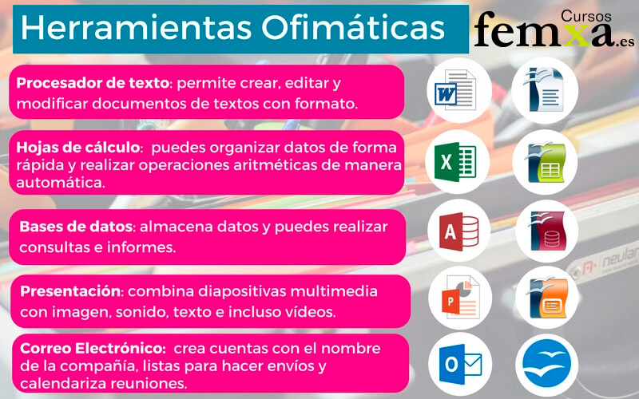
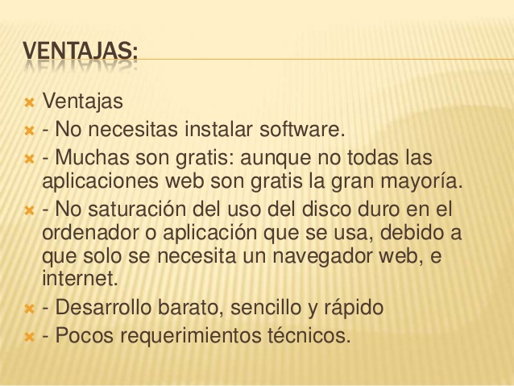
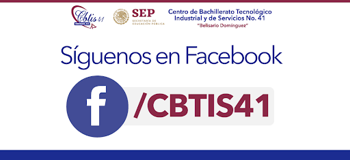

¿Por que estudiar Ofimatica?

1¿Que es la Ofimatica?
Para la definición de qué es ofimática, lo podemos hacer diciendo que es un conjunto de aplicaciones y herramientas diseñadas para organizar, gestionar, optimizar y realizar tareas dentro de una oficina o el lugar donde estemos realizando nuestra función de trabajo
2Beneficios de la Ofimatica
3¿Por qué si estudiar ofimatica?
En un curso de ofimática, podrás tener acceso a la información necesaria para entender y desarrollar actividades en Windows o Mac con mejor eficiencia. En general, saber usar este tipo de herramientas te permitirá compartir como también recibir todo tipo de información a través de una gran gama de opciones.
Galeria


